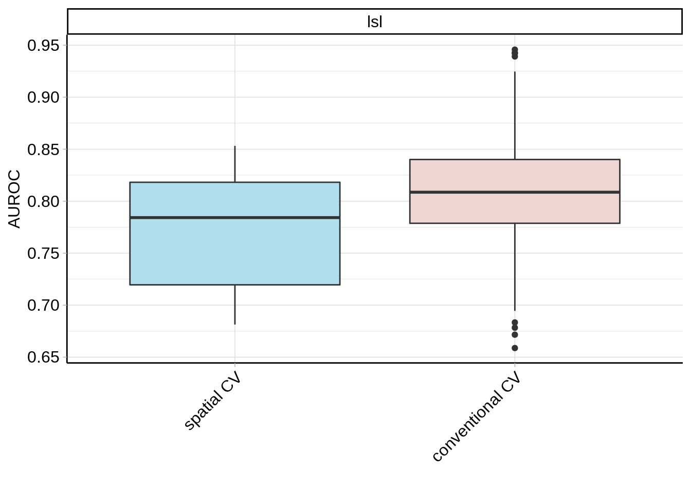
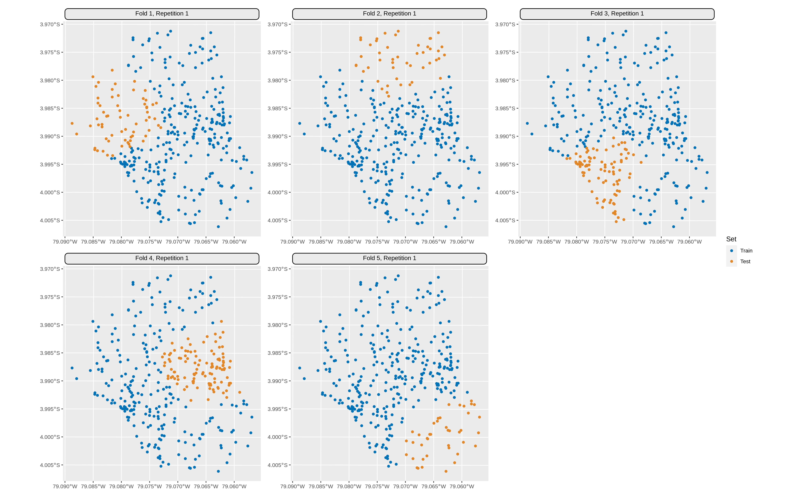
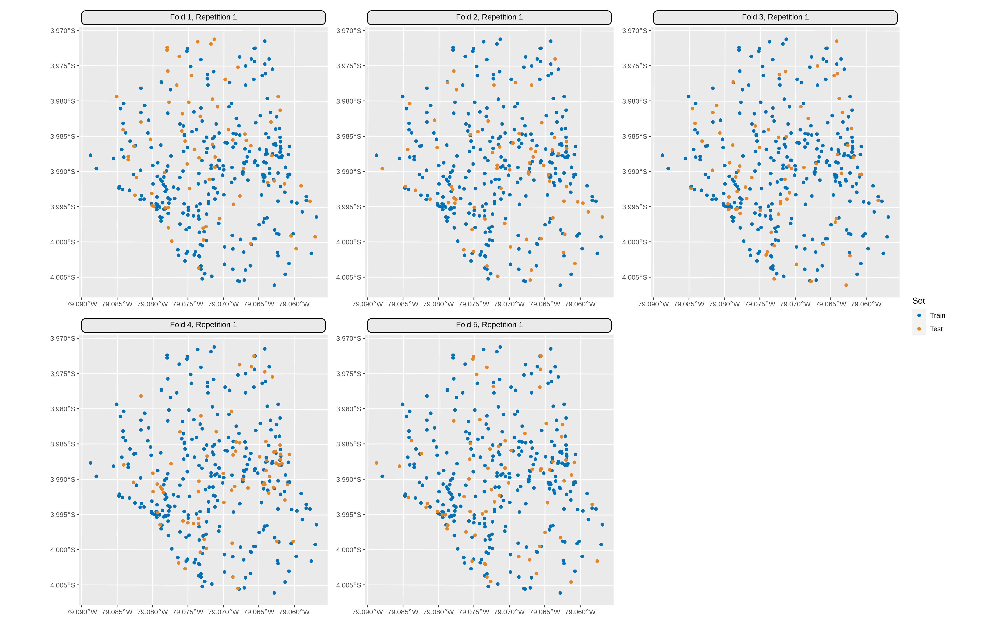
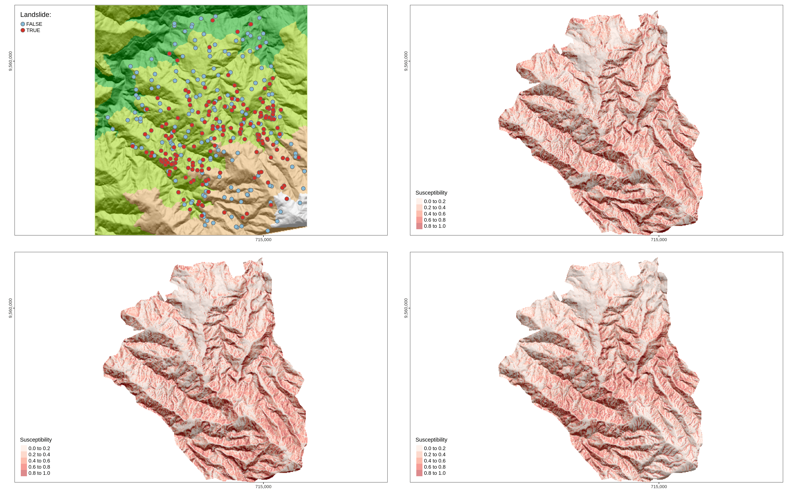

A Spatial Statistics Playground w/ mlr3
Foreward
Here I explore handling spatial data to build predictive models. And in particularly I use the mlr3 ecosystem as my modeling framework. Much of this code comes from the Resources gathered below.
All of the computations are ran via GitHub Actions. Thus, the hardware / compute specs are minimal - but the workflow to render this R Markdown is entirely reproducible.
Enjoy.
Setup
packages
# from pca-mlr3-pipelines
library(mlr3verse)
library(data.table)
library(future)
library(igraph)
library(ggfortify)
library(scattermore)
library(R6)
library(rlang)
# from Statistical Learning | Geocomputation with R
library(lgr)
library(sf)
library(terra)
library(progressr)
library(mlr3spatiotempcv)
library(spDataLarge)
library(tmap)
library(tmaptools)
library(raster)
library(pROC)
library(tictoc)
library(ggplot2)
library(mlr3extralearners)mlr3verse_info
mlr3verse_info()## package version
## 1: bbotk 0.5.1
## 2: mlr3cluster 0.1.2
## 3: mlr3data 0.6.0
## 4: mlr3filters 0.5.0
## 5: mlr3fselect 0.6.1
## 6: mlr3hyperband 0.4.0
## 7: mlr3learners 0.5.2
## 8: mlr3misc 0.10.0
## 9: mlr3pipelines 0.4.0
## 10: mlr3proba 0.4.4
## 11: mlr3tuning 0.12.1
## 12: mlr3tuningspaces 0.1.1
## 13: mlr3viz 0.5.9
## 14: paradox 0.8.0Resources
Landslide Susceptibility
Data
data
data("lsl", "study_mask", package = "spDataLarge")
lsl <- as.data.table(lsl)
ta <- terra::rast(system.file("raster/ta.tif", package = "spDataLarge"))map-landslides
lsl_sf <- st_as_sf(lsl, coords = c("x", "y"), crs = "EPSG:32717")
# terra generates errors if this object is called named 'slope'
slope1 <- ta$slope * pi / 180
aspect <- terra::terrain(ta$elev, v = "aspect", unit = "radians")
hs <- terra::shade(slope = slope1, aspect = aspect)
# so far tmaptools does not support terra objects
bbx <- tmaptools::bb(
raster::raster(hs), xlim = c(-0.0001, 1),
ylim = c(-0.0001, 1), relative = TRUE
)
map <- tm_shape(hs, bbox = bbx) +
tm_grid(
col = "black", n.x = 1, n.y = 1, labels.inside.frame = FALSE,
labels.rot = c(0, 90), lines = FALSE
) +
tm_raster(palette = gray(0:100 / 100), n = 100, legend.show = FALSE) +
tm_shape(ta$elev) +
tm_raster(alpha = 0.5, palette = terrain.colors(10), legend.show = FALSE) +
tm_shape(lsl_sf) +
tm_bubbles(
"lslpts", size = 0.2, palette = "-RdYlBu", title.col = "Landslide: "
) +
tm_layout(inner.margins = 0) +
tm_legend(bg.color = "white")lsl
lsl## x y lslpts slope cplan cprof elev
## 1: 713887.7 9558537 FALSE 33.75185 0.023180449 0.003193061 2422.810
## 2: 712787.7 9558917 FALSE 39.40821 -0.038638908 -0.017187813 2051.771
## 3: 713407.7 9560307 FALSE 37.45409 -0.013329108 0.009671087 1957.832
## 4: 714887.7 9560237 FALSE 31.49607 0.040931452 0.005888638 1968.621
## 5: 715247.7 9557117 FALSE 44.07456 0.009686948 0.005149810 3007.774
## ---
## 346: 714877.2 9558362 TRUE 49.16936 -0.079123855 -0.004267062 2577.096
## 347: 714909.5 9558581 TRUE 39.75526 -0.022253942 0.010101856 2441.529
## 348: 713713.6 9558849 TRUE 41.92702 -0.026429312 0.001791014 2375.455
## 349: 715253.2 9558797 TRUE 38.98206 -0.035161112 0.002966748 2442.470
## 350: 713825.6 9559078 TRUE 35.21368 0.020333998 -0.003390223 2377.151
## log10_carea
## 1: 2.784319
## 2: 4.146013
## 3: 3.643556
## 4: 2.268703
## 5: 3.003426
## ---
## 346: 3.242106
## 347: 3.037662
## 348: 2.859420
## 349: 2.735578
## 350: 3.203316Spatial Bias
GLM Classif - Predictive Model
glm-fit-pred
fit <- glm(
lslpts ~ slope + cplan + cprof + elev + log10_carea,
family = binomial(),
data = lsl
)
pred <- terra::predict(ta, model = fit, type = "response")map-landslides-glm-bias-pred
sv_study_mask <- terra::vect(study_mask)
map_glm <- tm_shape(hs, bbox = bbx) +
tm_grid(
col = "black", n.x = 1, n.y = 1, labels.inside.frame = FALSE,
labels.rot = c(0, 90), lines = FALSE
) +
tm_raster(palette = "white", legend.show = FALSE) +
# hillshade
tm_shape(terra::mask(hs, sv_study_mask), bbox = bbx) +
tm_raster(palette = gray(0:100 / 100), n = 100, legend.show = FALSE) +
# prediction raster
tm_shape(terra::mask(pred, sv_study_mask)) +
tm_raster(
alpha = 0.5, palette = "Reds", n = 6, legend.show = TRUE, title = "Susceptibility"
) +
tm_layout(
legend.position = c("left", "bottom"), legend.title.size = 0.9, inner.margins = 0
)Spatial CV using mlr3
Here we introduce spatial cross validation to combat spatial autocorrelation and bias. As mentioned previously, we’ll use the mlr3 framework to build our model.
Specifically, we’ll run 4 types of models. The first 2 will be specified via an mlr3 ‘design’. A design is a table of scenarios (models to be evaluated) of unique combinations of Task, Learner, and Resampling objects.
We create the design using benchmark_grid and can run the design object using benchmark.
We will parallelize the execution of our models as much as possible. This depends on the number of cores that are available on our machine and by how we instruct futures to be resolved by specifying the future topology via future::plan. An optimal approach can also depend on types of resampling methods used by each of our models (e.g. nested resampling can be executing in parallel in the inner resampling loop), as well as the dimensions of our design.
GLM Classif - Model Evaluation
The point of this section is to retrieve a bias-reduced performance estimate. We’ll do this by using the logistic regression learner “classif.log_reg” first for predicting landslide susceptibility.
In the next section, we will use a learner that has hyperparameters (an SVM), which we will tune. The goal of training that model will be to maximize predictive performance.
Task
Note, both TaskClassifST$new & as_task_classif_st can accept sf objects, e.g. our lsl_sf object. When this is the case, spatial metadata can be extracted and used for input arguments to the task (e.g. coordinate_names & crs in the extra_args list).
However, apparently the task converts the sf object into a data.table object, which we know could become memory intensive when handling large data.
By default, all variables other than the target parameter & the coordinate_names within the backend/x object are used as predictor variables. By default coords_as_features is set to FALSE, which instructs the task to not use coordinate_names as predictors. Set this to TRUE to use them as predictors.
task_new
task_new <- mlr3spatiotempcv::TaskClassifST$new(
id = "lsl",
backend = mlr3::as_data_backend(lsl),
target = "lslpts",
positive = "TRUE",
extra_args = list(
coordinate_names = c("x", "y"),
coords_as_features = FALSE,
crs = "EPSG:32717"
)
)
task_new## <TaskClassifST:lsl> (350 x 6)
## * Target: lslpts
## * Properties: twoclass
## * Features (5):
## - dbl (5): cplan, cprof, elev, log10_carea, slope
## * Coordinates:
## x y
## 1: 713887.7 9558537
## 2: 712787.7 9558917
## 3: 713407.7 9560307
## 4: 714887.7 9560237
## 5: 715247.7 9557117
## ---
## 346: 714877.2 9558362
## 347: 714909.5 9558581
## 348: 713713.6 9558849
## 349: 715253.2 9558797
## 350: 713825.6 9559078task
task <- as_task_classif_st(
x = lsl,
target = "lslpts",
positive = "TRUE",
coordinate_names = c("x", "y"),
coords_as_features = FALSE,
crs = "EPSG:32717"
)
task## <TaskClassifST:lsl> (350 x 6)
## * Target: lslpts
## * Properties: twoclass
## * Features (5):
## - dbl (5): cplan, cprof, elev, log10_carea, slope
## * Coordinates:
## x y
## 1: 713887.7 9558537
## 2: 712787.7 9558917
## 3: 713407.7 9560307
## 4: 714887.7 9560237
## 5: 715247.7 9557117
## ---
## 346: 714877.2 9558362
## 347: 714909.5 9558581
## 348: 713713.6 9558849
## 349: 715253.2 9558797
## 350: 713825.6 9559078Creating the tasks via the above methods seem to make them identical, but that’s not strictly the case.
identical(task_new, task)## [1] FALSE
Learner
We’ll use a logistic regression learner for this task since the response variable of lsl$lslpts is binary.
as.data.table(mlr_learners) %>% `[`(key == "classif.log_reg")## key label task_type feature_types packages properties predict_types
## 1: classif.log_reg <NA> classif logical,integer,numeric,character,factor,ordered mlr3,mlr3learners,stats loglik,twoclass,weights response,problearner <- lrn("classif.log_reg", predict_type = "prob")
# to make sure that training does not stop b/c of any failing models, we define a fallback learner
learner$fallback <- lrn("classif.featureless", predict_type = "prob")Resampling
resamplings <- list(
rsmp("repeated_spcv_coords", folds = 5, repeats = 100),
rsmp("repeated_cv", folds = 5, repeats = 100)
)Design & Benchmark Grid
design <- benchmark_grid(
tasks = task,
learners = learner,
resamplings = resamplings
)
design## task learner
## 1: <TaskClassifST[51]> <LearnerClassifLogReg[37]>
## 2: <TaskClassifST[51]> <LearnerClassifLogReg[37]>
## resampling
## 1: <ResamplingRepeatedSpCVCoords[22]>
## 2: <ResamplingRepeatedCV[22]>Execution - Training
Set seed for reproducibility.
set.seed(1)
plan(multisession)lgr::get_logger("mlr3")$set_threshold("warn")
tic()
progressr::with_progress(
bmr <- benchmark(
design = design,
store_models = FALSE,
store_backends = FALSE,
encapsulate = "evaluate"
)
)
toc()## 26.854 sec elapsedModel Performance Evaluation
p_auroc <- autoplot(bmr, measure = msr("classif.auc"))
p_auroc$labels$y = "AUROC"
p_auroc$layers[[1]]$aes_params$fill = c("lightblue2", "mistyrose2")
p_auroc + scale_x_discrete(labels=c("spatial CV", "conventional CV"))
autoplot(bmr) + scale_x_discrete(labels=c("spatial CV", "conventional CV"))
SVM Classif - Predictive Model
Learner
as.data.table(mlr_learners) %>% `[`(grepl("svm", key) & task_type == "classif")## key label task_type feature_types packages properties predict_types
## 1: classif.ksvm <NA> classif logical,integer,numeric,character,factor,ordered mlr3,mlr3extralearners,kernlab multiclass,twoclass,weights response,prob
## 2: classif.lssvm <NA> classif numeric,integer mlr3,mlr3extralearners,kernlab multiclass,twoclass response
## 3: classif.svm <NA> classif logical,integer,numeric mlr3,mlr3learners,e1071 multiclass,twoclass response,problrn_ksvm <- lrn("classif.ksvm", predict_type = "prob", kernel = "rbfdot", type = "C-svc")
# to make sure that tuning does not stop b/c of any failing models, we define a fallback learner
lrn_ksvm$fallback <- lrn("classif.featureless", predict_type = "prob")Hyperparameter Tuner Strategy
# five spatially disjoint k-means partitions
tune_level_spcv <- rsmp("spcv_coords", folds = 5)
# randomly sample partitions
tune_level_cv <- rsmp("cv", folds = 5)
# use 50 randomly selected hyperparameters
terminator <- trm("evals", n_evals = 50)
tuner <- tnr("random_search")
# define the outer limits of the randomly selected hyperparameters
search_space <- paradox::ps(
C = paradox::p_dbl(lower = -12, upper = 15, trafo = function(x) 2^x),
sigma = paradox::p_dbl(lower = -15, upper = 6, trafo = function(x) 2^x)
)at_ksvm_spcv = mlr3tuning::AutoTuner$new(
learner = lrn_ksvm,
resampling = tune_level_spcv, # spatially disjoint k-fold k-means partitioning
measure = mlr3::msr("classif.auc"), # performance measure
terminator = terminator, # n iterations of unique randomly selected hyperparameters
tuner = tuner, # specify random search
search_space = search_space, # predefined hyperparameter search space
store_models = TRUE
)
at_ksvm_cv = mlr3tuning::AutoTuner$new(
learner = lrn_ksvm,
resampling = tune_level_cv,
measure = mlr3::msr("classif.auc"),
terminator = terminator,
tuner = tuner,
search_space = search_space
)Execution - Training
set.seed(1)
plan(multisession)train-auto
lgr::get_logger("mlr3")$set_threshold("warn")
lgr::get_logger("bbotk")$set_threshold("warn")
tic()
progressr::with_progress(
{
at_ksvm_spcv$train(task = task)
at_ksvm_cv$train(task)
}
)
toc()## 62.856 sec elapsedat_ksvm_spcv$model$learner$state$model## Support Vector Machine object of class "ksvm"
##
## SV type: C-svc (classification)
## parameter : cost C = 18.917019252064
##
## Gaussian Radial Basis kernel function.
## Hyperparameter : sigma = 0.000987619014263272
##
## Number of Support Vectors : 251
##
## Objective Function Value : -4386.238
## Training error : 0.245714
## Probability model included.at_ksvm_spcv$model$tuning_instance## <TuningInstanceSingleCrit>
## * State: Optimized
## * Objective: <ObjectiveTuning:classif.ksvm_on_lsl>
## * Search Space:
## <ParamSet>
## id class lower upper nlevels default value
## 1: C ParamDbl -12 15 Inf <NoDefault[3]>
## 2: sigma ParamDbl -15 6 Inf <NoDefault[3]>
## Trafo is set.
## * Terminator: <TerminatorEvals>
## * Terminated: TRUE
## * Result:
## C sigma learner_param_vals x_domain classif.auc
## 1: 4.241613 -9.983758 <list[4]> <list[2]> 0.7817883
## * Archive:
## <ArchiveTuning>
## C sigma classif.auc runtime_learners timestamp batch_nr warnings errors resample_result
## 1: -10.33 -10.675 0.77 2.30 2022-06-06 09:50:41.36 1 0 0 <ResampleResult[22]>
## 2: -1.63 1.167 0.73 0.26 2022-06-06 09:50:41.73 2 0 0 <ResampleResult[22]>
## 3: 14.78 -7.019 0.71 3.00 2022-06-06 09:50:43.80 3 0 0 <ResampleResult[22]>
## 4: -6.27 -1.315 0.76 0.24 2022-06-06 09:50:44.25 4 0 0 <ResampleResult[22]>
## 5: -1.57 -14.719 0.77 0.24 2022-06-06 09:50:44.84 5 0 0 <ResampleResult[22]>
## 6: -2.81 -4.876 0.78 0.24 2022-06-06 09:50:45.33 6 0 0 <ResampleResult[22]>
## 7: -6.97 2.375 0.69 0.27 2022-06-06 09:50:45.93 7 0 0 <ResampleResult[22]>
## 8: -9.09 0.198 0.75 0.23 2022-06-06 09:50:46.53 8 0 0 <ResampleResult[22]>
## 9: 5.47 1.442 0.67 0.25 2022-06-06 09:50:47.12 9 0 0 <ResampleResult[22]>
## 10: 9.31 -14.510 0.78 0.22 2022-06-06 09:50:47.62 10 0 0 <ResampleResult[22]>
## 11: 6.70 -4.970 0.72 0.26 2022-06-06 09:50:48.23 11 0 0 <ResampleResult[22]>
## 12: -5.39 -13.516 0.77 0.27 2022-06-06 09:50:48.83 12 0 0 <ResampleResult[22]>
## 13: 2.00 -1.098 0.75 0.22 2022-06-06 09:50:49.33 13 0 0 <ResampleResult[22]>
## 14: -4.07 -5.360 0.78 0.23 2022-06-06 09:50:49.82 14 0 0 <ResampleResult[22]>
## 15: -5.03 -4.951 0.78 0.21 2022-06-06 09:50:50.30 15 0 0 <ResampleResult[22]>
## 16: 11.63 -7.879 0.73 0.36 2022-06-06 09:50:51.21 16 0 0 <ResampleResult[22]>
## 17: -2.99 -4.997 0.78 0.22 2022-06-06 09:50:51.70 17 0 0 <ResampleResult[22]>
## 18: -1.47 1.324 0.73 0.21 2022-06-06 09:50:52.19 18 0 0 <ResampleResult[22]>
## 19: 7.24 -6.600 0.73 0.23 2022-06-06 09:50:52.79 19 0 0 <ResampleResult[22]>
## 20: -6.53 -0.066 0.76 0.23 2022-06-06 09:50:53.38 20 0 0 <ResampleResult[22]>
## 21: -8.13 -9.968 0.77 0.25 2022-06-06 09:50:53.98 21 0 0 <ResampleResult[22]>
## 22: 11.66 1.357 0.67 0.24 2022-06-06 09:50:55.52 22 0 0 <ResampleResult[22]>
## 23: -0.93 2.028 0.70 0.22 2022-06-06 09:50:56.00 23 0 0 <ResampleResult[22]>
## 24: -2.46 -9.325 0.77 0.24 2022-06-06 09:50:56.44 24 0 0 <ResampleResult[22]>
## 25: -6.24 -12.283 0.77 0.26 2022-06-06 09:50:57.00 25 0 0 <ResampleResult[22]>
## 26: 4.17 5.500 0.63 0.29 2022-06-06 09:50:57.59 26 0 0 <ResampleResult[22]>
## 27: -0.35 -11.888 0.77 0.22 2022-06-06 09:50:58.08 27 0 0 <ResampleResult[22]>
## 28: -9.21 -5.628 0.78 0.23 2022-06-06 09:50:58.57 28 0 0 <ResampleResult[22]>
## 29: 1.38 -4.829 0.76 0.22 2022-06-06 09:50:59.05 29 0 0 <ResampleResult[22]>
## 30: 0.26 -4.265 0.76 0.21 2022-06-06 09:50:59.53 30 0 0 <ResampleResult[22]>
## 31: 4.08 -2.928 0.72 0.28 2022-06-06 09:51:00.13 31 0 0 <ResampleResult[22]>
## 32: 5.36 4.501 0.55 0.26 2022-06-06 09:51:00.73 32 0 0 <ResampleResult[22]>
## 33: 2.20 5.687 0.62 0.27 2022-06-06 09:51:01.32 33 0 0 <ResampleResult[22]>
## 34: 4.24 -9.984 0.78 0.23 2022-06-06 09:51:01.92 34 0 0 <ResampleResult[22]>
## 35: 0.22 -11.322 0.77 0.23 2022-06-06 09:51:02.41 35 0 0 <ResampleResult[22]>
## 36: 11.34 -2.092 0.70 0.48 2022-06-06 09:51:03.14 36 0 0 <ResampleResult[22]>
## 37: 0.23 -4.491 0.76 0.21 2022-06-06 09:51:03.63 37 0 0 <ResampleResult[22]>
## 38: -9.97 -9.167 0.77 0.28 2022-06-06 09:51:04.23 38 0 0 <ResampleResult[22]>
## 39: 12.17 -5.629 0.70 1.10 2022-06-06 09:51:05.30 39 0 0 <ResampleResult[22]>
## 40: -0.85 -13.660 0.77 0.23 2022-06-06 09:51:05.90 40 0 0 <ResampleResult[22]>
## 41: -2.88 -1.761 0.76 0.22 2022-06-06 09:51:06.38 41 0 0 <ResampleResult[22]>
## 42: -1.43 -7.010 0.78 0.23 2022-06-06 09:51:06.84 42 0 0 <ResampleResult[22]>
## 43: 8.01 -2.289 0.72 0.32 2022-06-06 09:51:07.39 43 0 0 <ResampleResult[22]>
## 44: -6.84 3.615 0.65 0.27 2022-06-06 09:51:07.98 44 0 0 <ResampleResult[22]>
## 45: -6.89 0.920 0.73 0.24 2022-06-06 09:51:08.58 45 0 0 <ResampleResult[22]>
## 46: 2.79 -0.053 0.73 0.23 2022-06-06 09:51:09.06 46 0 0 <ResampleResult[22]>
## 47: 13.04 -9.052 0.73 0.40 2022-06-06 09:51:09.65 47 0 0 <ResampleResult[22]>
## 48: 10.69 -8.323 0.74 0.29 2022-06-06 09:51:10.21 48 0 0 <ResampleResult[22]>
## 49: -6.10 -4.147 0.77 0.23 2022-06-06 09:51:10.66 49 0 0 <ResampleResult[22]>
## 50: 2.00 -3.182 0.73 0.23 2022-06-06 09:51:11.12 50 0 0 <ResampleResult[22]>
## C sigma classif.auc runtime_learners timestamp batch_nr warnings errors resample_resultat_ksvm_spcv$tuning_result$learner_param_vals## [[1]]
## [[1]]$kernel
## [1] "rbfdot"
##
## [[1]]$type
## [1] "C-svc"
##
## [[1]]$C
## [1] 18.91702
##
## [[1]]$sigma
## [1] 0.000987619at_ksvm_spcv$model$tuning_instance$archive$benchmark_result$resample_results$resample_result[[1]]## <ResampleResult> of 5 iterations
## * Task: lsl
## * Learner: classif.ksvm
## * Warnings: 0 in 0 iterations
## * Errors: 0 in 0 iterationsat_ksvm_spcv$model$tuning_instance$archive$benchmark_result$resample_results$resample_result[[1]]$score()## task task_id learner learner_id resampling resampling_id iteration prediction classif.ce
## 1: <TaskClassifST[51]> lsl <LearnerClassifKSVM[36]> classif.ksvm <ResamplingSpCVCoords[20]> spcv_coords 1 <PredictionClassif[20]> 0.6461538
## 2: <TaskClassifST[51]> lsl <LearnerClassifKSVM[36]> classif.ksvm <ResamplingSpCVCoords[20]> spcv_coords 2 <PredictionClassif[20]> 0.7916667
## 3: <TaskClassifST[51]> lsl <LearnerClassifKSVM[36]> classif.ksvm <ResamplingSpCVCoords[20]> spcv_coords 3 <PredictionClassif[20]> 0.6321839
## 4: <TaskClassifST[51]> lsl <LearnerClassifKSVM[36]> classif.ksvm <ResamplingSpCVCoords[20]> spcv_coords 4 <PredictionClassif[20]> 0.6605505
## 5: <TaskClassifST[51]> lsl <LearnerClassifKSVM[36]> classif.ksvm <ResamplingSpCVCoords[20]> spcv_coords 5 <PredictionClassif[20]> 0.6341463at_ksvm_spcv$model$tuning_instance$archive$benchmark_result$resample_results$resample_result[[1]]$learner## <LearnerClassifKSVM:classif.ksvm>
## * Model: -
## * Parameters: kernel=rbfdot, type=C-svc, C=0.0007759, sigma=0.0006119
## * Packages: mlr3, mlr3extralearners, kernlab
## * Predict Type: prob
## * Feature types: logical, integer, numeric, character, factor, ordered
## * Properties: multiclass, twoclass, weightsat_ksvm_spcv$model$tuning_instance$archive$benchmark_result$resample_results$resample_result[[1]]$learners## [[1]]
## <LearnerClassifKSVM:classif.ksvm>
## * Model: ksvm
## * Parameters: kernel=rbfdot, type=C-svc, C=0.0007759, sigma=0.0006119
## * Packages: mlr3, mlr3extralearners, kernlab
## * Predict Type: prob
## * Feature types: logical, integer, numeric, character, factor, ordered
## * Properties: multiclass, twoclass, weights
##
## [[2]]
## <LearnerClassifKSVM:classif.ksvm>
## * Model: ksvm
## * Parameters: kernel=rbfdot, type=C-svc, C=0.0007759, sigma=0.0006119
## * Packages: mlr3, mlr3extralearners, kernlab
## * Predict Type: prob
## * Feature types: logical, integer, numeric, character, factor, ordered
## * Properties: multiclass, twoclass, weights
##
## [[3]]
## <LearnerClassifKSVM:classif.ksvm>
## * Model: ksvm
## * Parameters: kernel=rbfdot, type=C-svc, C=0.0007759, sigma=0.0006119
## * Packages: mlr3, mlr3extralearners, kernlab
## * Predict Type: prob
## * Feature types: logical, integer, numeric, character, factor, ordered
## * Properties: multiclass, twoclass, weights
##
## [[4]]
## <LearnerClassifKSVM:classif.ksvm>
## * Model: ksvm
## * Parameters: kernel=rbfdot, type=C-svc, C=0.0007759, sigma=0.0006119
## * Packages: mlr3, mlr3extralearners, kernlab
## * Predict Type: prob
## * Feature types: logical, integer, numeric, character, factor, ordered
## * Properties: multiclass, twoclass, weights
##
## [[5]]
## <LearnerClassifKSVM:classif.ksvm>
## * Model: ksvm
## * Parameters: kernel=rbfdot, type=C-svc, C=0.0007759, sigma=0.0006119
## * Packages: mlr3, mlr3extralearners, kernlab
## * Predict Type: prob
## * Feature types: logical, integer, numeric, character, factor, ordered
## * Properties: multiclass, twoclass, weightsat_ksvm_spcv$model$tuning_instance$archive$benchmark_result$resample_results$resample_result[[1]]$learners[[1]]$model
at_ksvm_spcv$model$tuning_instance$archive$benchmark_result$resample_results$resample_result[[1]]$learners[[5]]$model## Support Vector Machine object of class "ksvm"
##
## SV type: C-svc (classification)
## parameter : cost C = 0.000775938162017681
##
## Gaussian Radial Basis kernel function.
## Hyperparameter : sigma = 0.000611850188548689
##
## Number of Support Vectors : 266
##
## Objective Function Value : -0.2064
## Training error : 0.466667
## Probability model included.
## Support Vector Machine object of class "ksvm"
##
## SV type: C-svc (classification)
## parameter : cost C = 0.000775938162017681
##
## Gaussian Radial Basis kernel function.
## Hyperparameter : sigma = 0.000611850188548689
##
## Number of Support Vectors : 298
##
## Objective Function Value : -0.2312
## Training error : 0.482201
## Probability model included.k-folds CV Spatial Partitioning
autoplot(
object = at_ksvm_spcv$archive$benchmark_result$resamplings$resampling[[1]],
task = task, fold_id = 1:5
)
k-folds CV Random Partitioning
autoplot(
object = at_ksvm_cv$archive$benchmark_result$resamplings$resampling[[1]],
task = task, fold_id = 1:5
)
Prediction Maps
Here we display landslide susceptibility.
tmap_pred <- function(preds, hs, bbx, sv_study_mask, palette) {
t_map <- tm_shape(shp = hs, bbox = bbx) +
tm_grid(
col = "black", n.x = 1, n.y = 1, labels.inside.frame = FALSE,
labels.rot = c(0, 90), lines = FALSE
) +
tm_raster(palette = "white", legend.show = FALSE) +
# hillshade
tm_shape(terra::mask(x = hs, mask = sv_study_mask), bbox = bbx) +
tm_raster(palette = gray(0:100 / 100), n = 100, legend.show = FALSE) +
# add prediction raster
tm_shape(terra::mask(x = preds, mask = sv_study_mask)) +
tm_raster(
alpha = 0.5, palette = palette, n = 6, legend.show = TRUE, title = "Susceptibility"
) +
tm_layout(
legend.position = c("left", "bottom"), legend.title.size = 0.9, inner.margins = 0
)
return(t_map)
} maps-svm
map_svm_spcv <- tmap_pred(
preds = pred_spcv[[1]], hs = hs, bbx = bbx, sv_study_mask = sv_study_mask, palette = "Reds"
)
map_svm_cv <- tmap_pred(
preds = pred_cv[[1]], hs = hs, bbx = bbx, sv_study_mask = sv_study_mask, palette = "Reds"
)tmap_arrange(map, map_glm, map_svm_spcv, map_svm_cv)